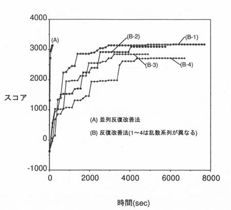

タンパク質配列の類似性解析技術は、タンパク質の分類、未知の機能の推測、 進化の過程の解明に重要な役割を担う技術である。従来は、もっぱら熟練した 生物学者が経験と勘を頼りに時間をかけて行っていたが、近年、解析すべきタ ンパク質配列の数が急激に増加しており、解析技術の計算機による自動化が望 まれていた。以前より、いくつかの類似性解析手法が提案され、計算機に実装 されてはいるが、生物学的な観点からすると解の品質が不十分であったり、満 足すべき解が得られるまで許容できないほどの長時間を要するものが、ほとん どであった。

並列反復改善法の効果
このシステムは、並列推論マシンを利用し、実用規模の類似性解析を現実的な 時間内に実行し、高品質な解析結果を与えるシステムを構築している。本シス テムは独自に開発した並列反復改善法を用いており、部分的な最適化を並列に、 そして反復的に行っている。具体的には、反復の各段階で、可能な部分的最適 化を複数、それぞれ各要素プロセサで並列に行い、そのうちで一番評価の良い 結果を採用していく方法をとっている。この方法により、乱数で最適化の手順 を決め、逐次的に改善を行う反復改善法よりも、256台構成の並列推論マシン で、およそ85倍の高速化を得ている。